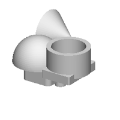
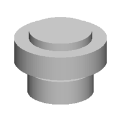
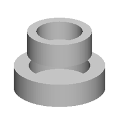
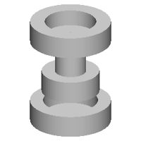

| 정답 |  | | |
| 0 | — | 실행 실패
KeyError: 'result' | 1 import cadquery as cq
2 w0=cq.Workplane('ZX',origin=(0,-99,0))
3 r=w0.sketch().segment((-95,-1),(-67,-1)).arc((-65,-10),(-61,-18)).segment((-61,-22)).segment((-59,-22)).arc((0,-65),(59,-22)).segment((61,-22)).segment((61,-18)).arc((65,-10),(67,-1)).segment((95,-1)).segment((95,1)).segment((67,1)).arc((65,10),(61,18)).segment((61,22)).segment((59,22)).arc((0,65),(-59,22)).segment((-61,22)).segment((-61,18)).arc((-65,10),(-67,1)).segment((-95,1)).close().assemble().finalize().extrude(169).union(w0.sketch().segment((-54,11),(-17,-31)).segment((-17,-40)).segment((-9,-40)).segment((17,-67)).segment((54,-29)).segment((17,13)).segment((17,22)).segment((9,22)).segment((-17,49)).close().assemble().circle(65,mode='s').finalize().extrude(199)) |
| 250 | — | 실행 실패
SyntaxError: '(' was never closed
1 째 줄 1 째 글자 | 1 (0.0, 0.0, 0.0, 0.0, 0.0, 0.0, 0.0, 0.0, 0.0, 0.0, 0.0, 0.0, 0.0, 0.0, 0.0, 0.0, 0.0, 0.0, 0.0, 0.0, 0.0, 0.0, 0.0, 0.0, 0.0, 0.0, 0.0, 0.0, 0.0, 0.0, 0.0, 0.0, 0.0, 0.0, 0.0, 0.0, 0.0, 0.0, 0.0, 0.0, 0.0, 0.0, 0.0, 0.0, 0.0, 0.0, 0.0, 0.0, 0.0, 0.0, 0.0, 0.0, 0.0, 0.0, 0.0, 0.0, 0.0, 0.0, 0.0, 0.0, 0.0, 0.0, 0.0, 0.0, 0.0, 0.0, 0.0, 0.0, 0.0, 0.0, 0.0, 0.0, 0.0, 0.0, 0.0, 0.0, 0.0, 0.0, 0.0, 0.0, 0.0, 0.0, 0.0, 0.0, 0.0, 0.0, 0.0, 0.0, 0.0, 0.0, 0.0, 0.0, 0.0, 0.0, 0.0, 0.0, 0.0, 0.0, 0.0, 0.0, 0.0, 0.0, 0.0, 0.0, 0.0, 0.0, 0.0, 0.0, 0.0, 0.0, 0.0, 0.0, 0.0, 0.0, 0.0, 0.0, 0.0, 0.0, 0.0, 0.0, 0.0, 0.0, 0.0, 0.0, 0.0, 0.0, 0.0, 0.0, 0.0, 0.0, 0.0, 0.0, 0.0, 0.0, 0.0, 0.0, 0.0, 0.0, 0.0, 0.0, 0.0, 0.0, 0.0, 0.0, 0.0, 0.0, 0.0, 0.0, 0.0, 0.0, 0.0, 0.0, 0.0, 0.0, 0.0, 0.0, 0.0, 0.0, 0.0, 0.0, 0.0, 0.0, 0.0, 0.0, 0.0, 0.0, 0.0, 0.0, 0.0, 0.0, 0.0, 0.0, 0.0, 0.0, 0.0, 0.0, 0.0, 0.0, 0.0, 0.0, 0.0, 0.0, 0.0, 0.0, 0.0, 0.0, 0.0, 0.0, 0.0, 0.0, 0.0, 0.0, 0.0, 0.0, 0.0, 0.0, 0.0, 0.0, 0.0, 0.0, 0.0, 0.0, 0. ^ |
| 500 | — | 실행 실패
SyntaxError: unmatched ')'
1 째 줄 1091 째 글자 | 1 b0 = place(cq.Workplane("XZ").polyline([(0.0, 0.0), (24.8, 0.0), (24.8, 24.8), (23.8, 24.8), (23.8, 10.1), (14.8, 10.1), (14.8, 7.6), (13.6, 7.6), (13.6, 24.8), (12.8, 24.8), (12.8, 10.1), (12.8, 7.1), (13.1, 7.1), (13.1, 24.8), (12.8, 24.8), (12.8, 10.1), (12.8, 7.1), (13.0, 7.1), (13.0, 24.8), (12.0, 24.8), (12.0, 10.1), (12.0, 7.1), (12.0, 24.8), (12.0, 24.8), (12.0, 19.1), (10.8, 19.1), (0.0, 19.1)]).close().revolve(38), (0.0, 0.0), "b", (0.0, 0.0), (0.0, 24.8), (0.0, 24.8), (0.0, 24.8), (0.0, 24.8), (0.0, 24.8), (0.0, 24.8), (0.0, 24.8), (0.0, 24.8), (0.0, 24.8), (0.0, 24.8), (0.0, 24.8), (0.0, 24.8), (0.0, 24.8), (0.0, 24.8), (0.0, 24.8), (0.0, 24.8), (0.0, 24.8), (0.0, 24.8), (0.0, 24.8), (0.0, 24.8), (0.0, 24.8), (0.0, 24.8), (0.0, 24.8), (0.0, 24.8), (0.0, 24.8), (0.0, 24.8), (0.0, 24.8), (0.0, 24.8), (0.0, 24.8), (0.0, 24.8), (0.0, 24.8), (0.0, 24.8), (0.0, 24.8), (0.0, 24.8), (0.0, 24.8), (0.0, 24.8), (0.0, 24.8), (0.0, 24.8), (0.0, 24.8), (0.0, 24.8), (0.0, 24.8), (0.0, 24.8), (0.0, 24.8), (0.0, 24.8), (0.0, 24.8), (0.0, 24.8), 0.0, 24.8), (0.0, 24.8), 0.0, 24.8), 0.0, 24.8), (0.0, 24.8), 0.0, 24.8), 0.0, 24.8), 0.0, 24.8), (0.0, 24.8), 0.0, 24.8), 0.0, 24.8), 0.0, 24.8), 0.0, 24.8), 0.0, 24.8), 0.0, ^ |
| 750 | — | 실행 실패
SyntaxError: '(' was never closed
6 째 줄 164 째 글자 | 1 b0 = place(cq.Workplane("XZ").polyline([(0.0, 0.0), (19.0, 0.0), (19.0, 10.0), (14.0, 10.0), (14.0, 2.0), (0.0, 2.0)]).close().revolve(360, (0, 0, 0), (0, 1, 0)).faces(">Z").workplane(origin=(0, 0, 10.0)).center(1.2, -1.1).rect(10.1, 1.1).cutBlind(-1.6), "y", (0.0, 0.0, 0.0))
2 b1 = place(cq.Workplane("XZ").polyline([(0.0, 0.0), (20.0, 0.0), (20.0, 10.0), (15.0, 10.0), (15.0, 2.0), (0.0, 2.0)]).close().revolve(360, (0, 0, 0), (0, 1, 0)).faces(">Z").workplane(origin=(0, 0, 10.0)).center(1.2, -1.1).rect(16.1, 14.1).cutBlind(-1.2), "y", (0.0, 0.0, -22.2))
3 b4 = place(cq.Workplane("XZ").polyline([(0.0, 0.0), (22.0, 0.0), (22.0, 10.1), (21.1, 10.1), (21.1, 14.8), (14.0, 14.8), (14.0, 13.6), (10.0, 13.6), (6.5, 13.6), (3.5, 13.6), (0.0, 13.6)]).close().revolve(360, (0, 0, 0), (0, 1, 0)), "y", (0.0, 0.0, 22.2))
4 b3 = place(cq.Workplane("XZ").polyline([(0.0, 0.0), (22.0, 0.0), (22.0, 10.1), (19.0, 10.1), (19.0, 4.1), (0.0, 4.1)]).close().revolve(360, (0, 0, 0), (0, 1, 0)).faces(">Z").workplane(origin=(0, 0, 10.1)).center(1.2, -10.6).rect(16.2, 22.2).cutBlind(-12.6), "z", (0.0, 0.0, -22.2))
5 b3 = place(cq.Workplane("XZ").polyline([(0.0, 0.0), (22.0, 0.0), (22.0, 12.1), (19.0, 12.1), (19.0, 14.1), (14.0, 14.1), (14.0, 12.1), (10.0, 12.1), (10.0, 14.1), (0.0, 14.1)]).close().revolve(360, (0, 0, 0), (0, 1, 0)), "y", (-36.6, 0.0, 0.0))
6 b3 = place(cq.Workplane("XZ").polyline([(0.0, 0.0), (22.0, 0.0), (22.0, 12.1), (22.0, 14.1), (22.0, 15.2), (22.0, 16.2), (22.0, 17.2), (22.0, 18.2), (22.0, 20.2), (22.0, ^ |
| 1000 | — | 실행 실패
NameError: name 'b3' is not defined
5 째 줄 | 1 b0 = place(cq.Workplane("XZ").polyline([(0.0, 0.0), (24.0, 0.0), (24.0, 15.5), (15.9, 15.5), (15.9, 20.0), (0.0, 20.0)]).close().revolve(360, (0, 0, 0), (0, 1, 0)).faces(">Z").workplane(origin=(0, 0, 20.0)).center(-1.5, -1.1).hole(1.9, 1.8), "z", (0.0, 0.0, 0.0))
2 b1 = place(cq.Workplane("XZ").polyline([(0.0, 0.0), (24.0, 0.0), (24.0, 15.5), (14.9, 15.5), (14.9, 20.0), (0.0, 20.0)]).close().revolve(360, (0, 0, 0), (0, 1, 0)).faces(">Z").workplane(origin=(0, 0, 20.0)).center(-1.9, -1.1).hole(1.9), "z", (0.0, 0.0, -36.0))
3 b2 = place(cq.Workplane("XZ").polyline([(0.0, 0.0), (24.0, 0.0), (24.0, 15.7), (10.9, 15.7), (10.9, 20.0), (0.0, 20.0)]).close().revolve(360, (0, 0, 0), (0, 1, 0)).faces(">Z").workplane(origin=(0, 0, 20.0)).center(-1.5, -1.1).hole(1.3), "z", (0.0, 0.0, -36.0))
4 b2 = place(cq.Workplane("XZ").polyline([(0.0, 0.0), (24.0, 0.0), (24.0, 15.7), (14.9, 15.7), (14.9, 20.0), (0.0, 20.0)]).close().revolve(360, (0, 0, 0), (0, 1, 0)).faces(">Z").workplane(origin=(0, 0, 20.0)).center(-1.5, -1.3).hole(1.3), "z", (0.0, 0.0, -36.0))
5 result = b0.union(b1.union(b2.union(b3))) |
| 1250 | — | 실행 실패
NameError: name 'b2' is not defined
3 째 줄 | 1 b0 = place(cq.Workplane("XZ").polyline([(0.0, 0.0), (19.9, 0.0), (19.9, 15.0), (10.9, 15.0), (10.9, 20.0), (0.0, 20.0)]).close().revolve(360, (0, 0, 0), (0, 1, 0)).faces(">Z").workplane(origin=(0, 0, 20.0)).center(10.0, 10.9).hole(10.7).faces(">Z").workplane(origin=(0, 0, 20.0)).center(10.7, 10.0).hole(10.7, 10.0), "z", (0.0, 0.0, 0.0))
2 b1 = place(cq.Workplane("XZ").polyline([(0.0, 0.0), (28.8, 0.0), (28.8, 15.0), (17.9, 15.0), (17.9, 20.0), (0.0, 20.0)]).close().revolve(360, (0, 0, 0), (0, 1, 0)).faces(">Z").workplane(origin=(0, 0, 20.0)).center(10.7, 10.5).hole(10.2), "z", (0.0, 0.0, 20.0))
3 result = b0.union(b1.union(b2)) |
| 1500 | — | 실행 실패
SyntaxError: '(' was never closed
4 째 줄 11 째 글자 | 1 b0 = place(cq.Workplane("XZ").polyline([(0.0, 0.0), (28.2, 0.0), (27.2, 6.7), (24.2, 12.1), (19.9, 17.9), (13.1, 21.9), (6.6, 24.1), (0.0, 24.1)]).close().revolve(360, (0, 0, 0), (0, 1, 0)), "z", (0.0, 0.0, 0.0))
2 b1 = place(cq.Workplane("XZ").polyline([(0.0, 0.0), (28.2, 0.0), (27.2, 10.0), (24.9, 20.6), (20.9, 31.8), (15.6, 40.8), (9.5, 46.6), (4.0, 50.6), (0.0, 51.1)]).close().revolve(360, (0, 0, 0), (0, 1, 0)), "y", (0.0, 0.0, 29.0))
3 b2 = place(cq.Workplane("XZ").polyline([(0.0, 0.0), (20.0, 0.0), (19.6, 4.0), (18.5, 8.0), (15.9, 12.0), (11.9, 15.0), (7.0, 17.0), (0.0, 17.0)]).close().revolve(360, (0, 0, 0), (0, 1, 0)), "z", (0.0, 0.0, -29.0))
4 b3 = place(cq.Workplane("XY").add(cq.Workplane("XZ").polyline([(0.0, 0.0), (20.0, 0.0), (20.0, 15.0), (16.8, 15.0), (16.8, 3.9), (0.0, 3.9)]).close().revolve(360, (0, 0, 0), (0, 1, 0)).faces(">Z").workplane(origin=(0, 0, 15.0)).center(10.2, -10.7).rect(12.1, 8.1).cutBlind(-10.6), "z", (0.0, 0.0, -29.0)) ^
5 result = b0.union(b1.union(b2.union(b3))) |
| 1750 | — | 실행 실패
NameError: name 'b2' is not defined
3 째 줄 | 1 b0 = place(cq.Workplane("XZ").polyline([(0.0, 0.0), (28.2, 0.0), (28.2, 11.0), (17.0, 11.0), (17.0, 20.0), (0.0, 20.0)]).close().revolve(360, (0, 0, 0), (0, 1, 0)).faces(">Z").workplane(origin=(0, 0, 20.0)).center(-1.3, -1.3).hole(11.2).faces(">Z").workplane(origin=(0, 0, 20.0)).center(-1.3, 1.1).hole(1.2), "z", (0.0, 0.0, 0.0))
2 b1 = place(cq.Workplane("XZ").polyline([(0.0, 0.0), (28.2, 0.0), (28.2, 15.0), (17.9, 15.0), (17.9, 3.0), (0.0, 3.0)]).close().revolve(360, (0, 0, 0), (0, 1, 0)).faces(">Z").workplane(origin=(0, 0, 15.0)).center(-1.2, 1.1).hole(10.2).faces(">Z").workplane(origin=(0, 0, 15.0)).center(-1.2, 1.1).hole(10.2), "z", (0.0, 0.0, 20.0))
3 result = b0.union(b1.union(b2)) |
| 2000 |  | IoU 0.59 | 1 b0 = place(cq.Workplane("XZ").polyline([(0.0, 0.0), (20.0, 0.0), (20.0, 15.0), (10.8, 15.0), (10.8, 20.0), (0.0, 20.0)]).close().revolve(360, (0, 0, 0), (0, 1, 0)).faces(">Z").workplane(origin=(0, 0, 20.0)).center(-1.1, 1.1).hole(10.6, 10.6), "z", (0.0, 0.0, 0.0))
2 b1 = place(cq.Workplane("XZ").polyline([(0.0, 0.0), (28.0, 0.0), (28.0, 15.0), (18.0, 15.0), (18.0, 20.0), (0.0, 20.0)]).close().revolve(360, (0, 0, 0), (0, 1, 0)).faces(">Z").workplane(origin=(0, 0, 20.0)).center(-1.9, -1.3).hole(10.6, 10.6), "z", (0.0, 0.0, 20.0))
3 b2 = place(cq.Workplane("XZ").polyline([(0.0, 0.0), (28.0, 0.0), (28.0, 15.0), (19.0, 15.0), (19.0, 20.0), (0.0, 20.0)]).close().revolve(360, (0, 0, 0), (0, 1, 0)), "z", (0.0, 0.0, 20.0))
4 b3 = place(cq.Workplane("XZ").polyline([(0.0, 0.0), (26.0, 0.0), (26.0, 15.0), (17.6, 15.0), (17.6, 20.0), (0.0, 20.0)]).close().revolve(360, (0, 0, 0), (0, 1, 0)), "z", (0.0, 0.0, 20.0))
5 result = b0.union(b1.union(b2.union(b3))) |
| 2250 |  | IoU 0.52 | 1 b0 = place(cq.Workplane("XZ").polyline([(0.0, 0.0), (19.8, 0.0), (19.8, 15.0), (14.1, 15.0), (14.1, 3.0), (0.0, 3.0)]).close().revolve(360, (0, 0, 0), (0, 1, 0)).faces(">Z").workplane(origin=(0, 0, 15.0)).center(-1.1, 1.1).hole(10.7, 10.6), "z", (0.0, 0.0, 0.0))
2 b1 = place(cq.Workplane("XZ").polyline([(0.0, 0.0), (28.0, 0.0), (28.0, 15.0), (18.8, 15.0), (18.8, 3.1), (0.0, 3.1)]).close().revolve(360, (0, 0, 0), (0, 1, 0)).faces(">Z").workplane(origin=(0, 0, 15.0)).center(-1.1, 1.1).hole(10.6, 10.6), "z", (0.0, 0.0, -23.0))
3 b2 = place(cq.Workplane("XZ").polyline([(0.0, 0.0), (28.0, 0.0), (28.0, 15.0), (19.0, 15.0), (19.0, 3.9), (0.0, 3.9)]).close().revolve(360, (0, 0, 0), (0, 1, 0)).faces(">Z").workplane(origin=(0, 0, 15.0)).center(-1.1, -1.2).hole(10.2), "z", (0.0, 0.0, -23.0))
4 result = b0.union(b1.union(b2)) |
| 2500 |  | IoU 0.39 | 1 b0 = place(cq.Workplane("XZ").polyline([(0.0, 0.0), (20.0, 0.0), (20.0, 15.0), (10.8, 15.0), (10.8, 30.0), (0.0, 30.0)]).close().revolve(360, (0, 0, 0), (0, 1, 0)).faces(">Z").workplane(origin=(0, 0, 30.0)).center(-1.1, 1.1).hole(11.7, 15.0), "z", (0.0, 0.0, 0.0))
2 b1 = place(cq.Workplane("XZ").polyline([(0.0, 0.0), (28.0, 0.0), (28.0, 15.0), (17.8, 15.0), (17.8, 3.8), (0.0, 3.8)]).close().revolve(360, (0, 0, 0), (0, 1, 0)).faces(">Z").workplane(origin=(0, 0, 15.0)).center(-1.1, 1.1).hole(10.2, 14.0), "z", (0.0, 0.0, 30.0))
3 b2 = place(cq.Workplane("XZ").polyline([(0.0, 0.0), (28.0, 0.0), (28.0, 15.0), (19.0, 15.0), (19.0, 3.9), (0.0, 3.9)]).close().revolve(360, (0, 0, 0), (0, 1, 0)), "z", (0.0, 0.0, -30.0))
4 result = b0.union(b1.union(b2)) |
| 2750 | — | 실행 실패
NameError: name 'b4' is not defined
5 째 줄 | 1 b0 = place(cq.Workplane("XZ").polyline([(0.0, 0.0), (20.0, 0.0), (20.0, 15.0), (10.8, 15.0), (10.8, 3.0), (0.0, 3.0)]).close().revolve(360, (0, 0, 0), (0, 1, 0)).faces(">Z").workplane(origin=(0, 0, 15.0)).center(-1.1, 1.1).hole(10.6, 10.3), "z", (0.0, 0.0, 0.0))
2 b1 = place(cq.Workplane("XZ").polyline([(0.0, 0.0), (28.0, 0.0), (28.0, 15.0), (18.8, 15.0), (18.8, 3.1), (0.0, 3.1)]).close().revolve(360, (0, 0, 0), (0, 1, 0)).faces(">Z").workplane(origin=(0, 0, 15.0)).center(11.1, 10.3).hole(11.0, 11.0), "z", (0.0, 0.0, -19.5))
3 b2 = place(cq.Workplane("XZ").polyline([(0.0, 0.0), (28.0, 0.0), (28.0, 15.0), (21.9, 15.0), (21.9, 3.9), (0.0, 3.9)]).close().revolve(360, (0, 0, 0), (0, 1, 0)).faces(">Z").workplane(origin=(0, 0, 15.0)).center(11.1, -10.5).hole(11.0, 11.0), "y", (0.0, 0.0, -19.5))
4 b3 = place(cq.Workplane("XZ").polyline([(0.0, 0.0), (28.0, 0.0), (28.0, 15.0), (19.9, 15.0), (19.9, 3.9), (0.0, 3.9)]).close().revolve(360, (0, 0, 0), (0, 1, 0)).faces(">Z").workplane(origin=(0, 0, 15.0)).center(-11.1, 10.2).hole(11.0, 11.0), "z", (-31.2, 0.0, -19.5))
5 result = b0.union(b1.union(b2.union(b3.union(b4)))) |
| 3000 |  | IoU 0.53 | 1 b0 = place(cq.Workplane("XZ").polyline([(0.0, 0.0), (20.0, 0.0), (20.0, 15.0), (10.8, 15.0), (10.8, 3.0), (0.0, 3.0)]).close().revolve(360, (0, 0, 0), (0, 1, 0)).faces(">Z").workplane(origin=(0, 0, 15.0)).center(1.3, 1.1).hole(10.6, 10.3).faces(">Z").workplane(origin=(0, 0, 15.0)).center(1.1, 1.1).hole(10.6, 10.0), "z", (0.0, 0.0, 0.0))
2 b1 = place(cq.Workplane("XZ").polyline([(0.0, 0.0), (28.0, 0.0), (28.0, 15.0), (17.6, 15.0), (17.6, 3.9), (0.0, 3.9)]).close().revolve(360, (0, 0, 0), (0, 1, 0)).faces(">Z").workplane(origin=(0, 0, 15.0)).center(11.1, 10.5).hole(10.6, 10.5), "z", (0.0, 0.0, -22.0))
3 b2 = place(cq.Workplane("XZ").polyline([(0.0, 0.0), (26.0, 0.0), (26.0, 15.0), (17.6, 15.0), (17.6, 3.9), (0.0, 3.9)]).close().revolve(360, (0, 0, 0), (0, 1, 0)).faces(">Z").workplane(origin=(0, 0, 15.0)).center(11.1, -10.0).hole(10.2), "z", (0.0, 0.0, -22.0))
4 result = b0.union(b1.union(b2)) |